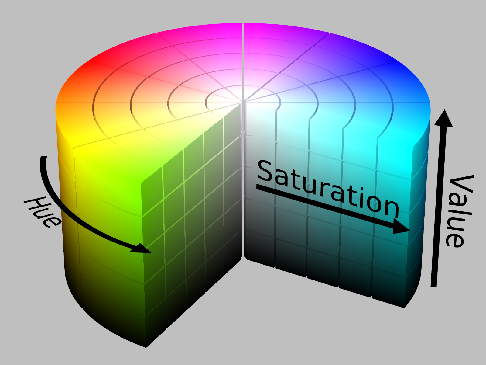

Gradient Blend
1 Gradient Blend
1.1 The Problem
1.1.1 Challenge 1
Write a function that given a DOM element makes it’s background-color start fading into different colors along the visible light spectrum in an endless cycle. Have the cycle length be configurable
const startGradientFade = (element: DOMElement, cycleLengthMilliseconds: Number): void => { ... }
If cycleLengthMilliseconds is passed a cycle length of 5000, this will traverse the gradient from red to purple in and back to red in 5 seconds.
:max_bytes(150000):strip_icc():format(webp)/the-visible-light-spectrum-2699036_FINAL2-c0b0ee6f82764efdb62a1af9b9525050.png)
1.1.2 Challenge 2
Write a generator function that takes a “step” size (0 <= number <= 1) and produces an endless sequence of RGB color strings (eg `a562fe`) moving along the visible light spectrum where the `step` determines how large a step along the spectrum you are taking:
| Step | Sequence |
|---|---|
| 1 | ff0000, ff0000, …. |
| .5 | ff0000, 00ffff, ff0000, … |
(a reasonable step size to get a nice gradient might be something like `0.01` or even smaller)
const gradientColors = function * (stepSize: Number) : Iterable<string> { ... }
Use this function to implement the method from 1.1.1.
1.2 Solution
An important thing here is to know about hsl / hsv notation.
1
In this notation, the color space is pictured as a cylinder with hue (degrees around the center) basically corresponding to the color spectrum.
1.2.1 Challenge 1
Well, this is solvable with css is it not?
<article id="gradient-colors"> <div></div> <style> #gradient-colors div { width: 400px; height: 200px; animation: gradient 5s infinite linear; } @keyframes gradient { 0% { background-color: hsl(0, 100%, 50%); } 25% { background-color: hsl(90, 100%, 50%); } 50% { background-color: hsl(180, 100%, 50%); } 75% { background-color: hsl(270, 100%, 50%); } 100% { background-color: hsl(360, 100%, 50%); } } </style> </article>
That works! To put it behind a function I would simply have the function emit a similar stylesheet. Lets just move on to…
1.2.2 Challenge 2
To be honest this is not much harder than the implementation of challenge 1
const gradientColors = function * (stepSize) { let nextHueProportion = 0 while(true) { const hue = Math.floor(360 * nextHueProportion) yield `hsl(${hue}, 100%, 50%)` nextHueProportion += stepSize nextHueProportion -= Math.floor(nextHueProportion) } } const it = gradientColors(.05)[Symbol.iterator]() const firstTen = Array.from({length: 10}, () => it.next().value) console.log(firstTen)
[ 'hsl(0, 100%, 50%)', 'hsl(18, 100%, 50%)', 'hsl(36, 100%, 50%)', 'hsl(54, 100%, 50%)', 'hsl(72, 100%, 50%)', 'hsl(90, 100%, 50%)', 'hsl(108, 100%, 50%)', 'hsl(125, 100%, 50%)', 'hsl(144, 100%, 50%)', 'hsl(161, 100%, 50%)' ]
Due to how the DOM/CSS interact, all of the above are perfectly valid colors to use.
However where's the fun in that? We actually want RGB format. This is not entirely straightforward but has some reasonable equations.
const isInOrder = (min, v, max) => min <= v && v < max const toHex = (num) => Math.floor(num).toString(16).toUpperCase().padStart(2, `0`) const hslToRgb = (h, s, l) => { const c = (1 - Math.abs(2*l - 1)) * s const x = c * (1 - Math.abs( ((h/60) % 2) - 1)) const m = l - c/2 const [rp, gp, bp] = isInOrder(0, h, 60) ? [c, x, 0] : isInOrder(60, h, 120) ? [x, c, 0] : isInOrder(120, h, 180) ? [0, c, x] : isInOrder(180, h, 240) ? [0, x, c] : isInOrder(240, h, 300) ? [x, 0, c] : isInOrder(300, h, 360) ? [c, 0, x] : (() => { throw Error(`Hue must be 0 <= #{h} < 360`)})() const [r, g, b] = [(rp+m)*255, (gp+m)*255, (bp+m)*255] return `#${toHex(r)}${toHex(g)}${toHex(b)}` }
Let's test that against this table
| Color | hsl | rgb (hex) |
|---|---|---|
| Black | "0,0,0" | #000000 |
| White | "0,0,1" | #FFFFFF |
| Red | "0,1,.5" | #FF0000 |
| Lime | "120,1,.5" | #00FF00 |
| Blue | "240,1,.5" | #0000FF |
| Yellow | "60,1,.5" | #FFFF00 |
| Cyan | "180,1,.5" | #00FFFF |
| Magenta | "300,1,.5" | #FF00FF |
| Silver | "0,0,.75" | #BFBFBF |
| Gray | "0,0,.5" | #808080 |
| Maroon | "0,1,.25" | #800000 |
| Olive | "60,1,.25" | #808000 |
| Green | "120,1,.25" | #008000 |
| Purple | "300,1,.25" | #800080 |
| Teal | "180,1,.25" | #008080 |
| Navy | "240,1,.25" | #000080 |
return colors.map(([color, hsl, rgb]) => { const [h,s,l] = hsl.split(`,`).map(parseFloat) return [color, hsl, rgb, hslToRgb(h, s, l)] })
Yes!
Well now it's just a matter of using the above. But also, in the spirit of lispy-ness, since we can make it more flexible lets make it more flexible. I have a feeling it will come in handy. Although the step size is set, why not treat it as a default? We can then pass an optional parameter to the yield and if one is passed we would use that step size
<article id="gradient-colors-function">
<div style="width:400px;height:200px;"></div>
</article>
<script>
const gradientColors = function * (defaultStepSize) {
let nextHueProportion = 0
while(true) {
const hue = Math.floor(360 * nextHueProportion)
const stepSize = yield hslToRgb(hue, 1, .5)
nextHueProportion += stepSize === undefined ? defaultStepSize : stepSize
nextHueProportion -= Math.floor(nextHueProportion)
}
}
const startGradientFade = (element, cycleLengthMilliseconds) => {
const colors = gradientColors(15.0/cycleLengthMilliseconds)[Symbol.iterator]() //15 is a fine default frame size, though it can be variable
const adjustColor = (prevTime) => {
const now = Date.now()
element.style.backgroundColor = colors.next((now - prevTime)/cycleLengthMilliseconds).value
window.requestAnimationFrame(() => adjustColor(now))
}
adjustColor(Date.now())
}
startGradientFade(document.querySelector("#gradient-colors-function"), 5000)
</script>